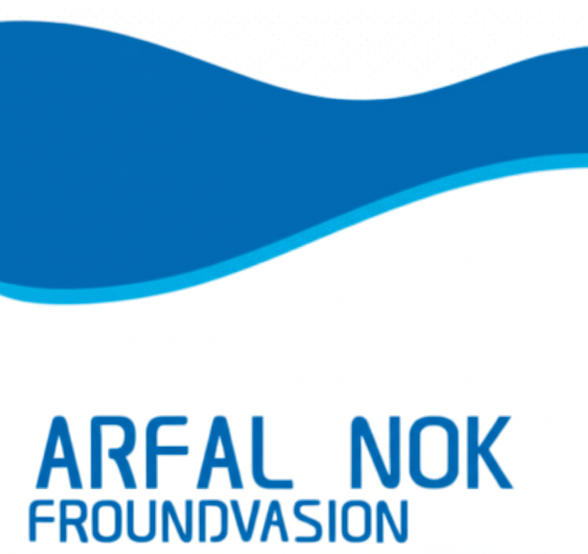

Harga makanan di kantin sekolah tidak konsisten
Selesai
Diposting: 18 Juli 2024

A*** P********
Pengadu
Beberapa siswa mengeluhkan harga yang terlalu mahal tanpa daftar harga yang jelas. Kantin sekolah seharusnya menyediakan daftar harga tetap untuk memastikan transparansi dan keadilan bagi semua siswa.